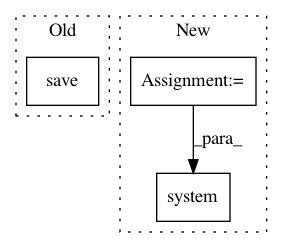

a92b1c8dd2927559e735a8596618f5c607bc884a,pynets/registration/reg_utils.py,,gen_mask,#Any#Any#Any#,21
Before Change
nib.save(nib.Nifti1Image(mask, affine=img.affine, header=img.header), t1w_brain_mask)
img.uncache()
else:
nib.save(nib.Nifti1Image(t1w_data.astype("bool"), affine=img.affine, header=img.header), t1w_brain_mask)
// Threshold T1w brain to binary in anat space
t_img = nib.load(t1w_brain_mask)
mask = math_img("img > 0.0", img=t_img)
After Change
t1w_brain_mask = f"{op.dirname(t1w_head)}/t1w_brain_bet_mask.nii.gz"
// Get mean B0 brain mask
cmd = f"bet {t1w_head} {t1w_brain} -m -f 0.2"
os.system(cmd)
time.sleep(1)
// Threshold T1w brain to binary in anat space
t_img = nib.load(t1w_brain_mask)
In pattern: SUPERPATTERN
Frequency: 3
Non-data size: 3
Instances
Project Name: dPys/PyNets
Commit Name: a92b1c8dd2927559e735a8596618f5c607bc884a
Time: 2020-06-28
Author: dpisner@utexas.edu
File Name: pynets/registration/reg_utils.py
Class Name:
Method Name: gen_mask
Project Name: dPys/PyNets
Commit Name: 89df2ce3c461d343118ab2bbce87302ab670ef0f
Time: 2019-08-24
Author: dpisner@utexas.edu
File Name: pynets/core/utils.py
Class Name:
Method Name: make_gtab_and_bmask
Project Name: dPys/PyNets
Commit Name: 27e4a648a96c76de6b7ed24ea95ea76ee17f623d
Time: 2020-01-02
Author: dpisner@utexas.edu
File Name: pynets/registration/register.py
Class Name: FmriReg
Method Name: atlas2t1wmni_align